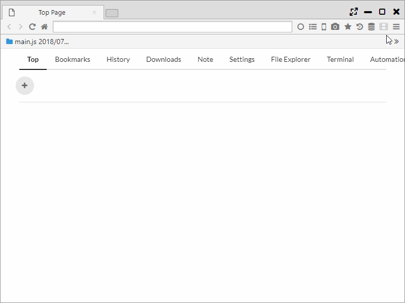

Find in Page
In addition to the search function of Chrome, OR search and regular expression search can be performed. It is also equipped with "Search Highlight" function.
1. Search Options
Clicking Ctrl or Cmd+F or selecting Main Menu>Search can start a search within a page.
The following options can be used in searches.
- Case ・・・ Finding a search match by differentiating upper case and lower case characters
- OR ・・・ Carrying out OR searches using space division
- Reg ・・・ Carrying out searches using regular expressions

2. Search Highlight
"Search Highlight" is a function that carries out searches within a page automatically of a search engine search word.
When "ain Menu > Search Highlight" is turned ON, the search word is highlighted on the search engine page and the next page.
When "Main Menu > More Tools > Search Highlight Recursive" is turned ON, all pages after search will be subject to Search Highlight. 